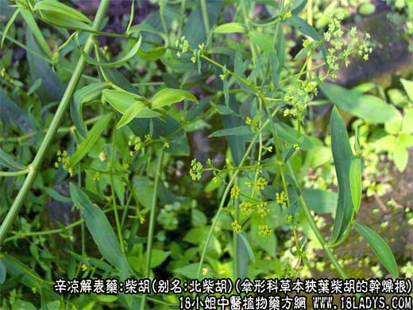
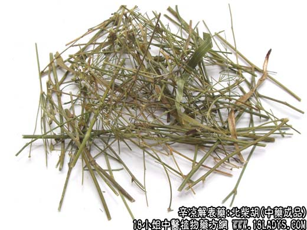
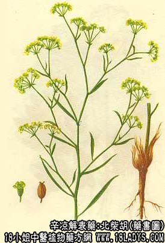

柴胡为常用中药。《神农本草经》列为上品。商品分北柴胡和南柴胡二类。
别名：北柴胡别名：硬柴胡、津柴胡。
南柴胡别名：软柴胡、香柴胡、红柴胡。
来源：北柴胡为伞形科多年生草本植物柴胡、狭叶柴胡或同属数种植物的干燥根。按性状不同，分别习称“北柴胡”、“南柴胡”。
以上两种均为野生。
产地：北柴胡主产于华北、河南。湖北、辽宁、山东、安徽等省亦产。
性状鉴别：北柴胡：呈圆柱形，有分歧，稍弯曲。长约5~15厘米，上端直径约0.2~1厘米，尾端渐细，形如鼠尾，顶端略带芦茎。外皮黄褐色或单棕褐色，有细纵纹和横长点状皮孔及支根痕，质较坚韧，不易折断。断面黄白色，柴质。气微香，味淡。
以主根粗大，少支根，黄褐色为佳（河南洛宁产者习称王范柴胡质最好）
软柴胡：主根圆柱形或圆锥形，多弯曲，少分歧，长约5~10厘米，直径0.2~0.6厘米。顶端常残留有黑棕色纤维毛须，外皮棕褐色或黄棕色，有纵皱纹，有疣状皮孔，质松脆，易折断。断面淡黄色或淡棕色，多裂隙，气微香，有油腥气，味淡。
以根条粗、红棕色，质松脆者为佳。
主要成分：主要含柴胡皂甙、植物甾醇，另含少量挥发油茎叶含芦丁。
功效与作用：疏气、解郁、散火，其原理为：
1、解热。动物实验证实有解热作用。临床观察其退热作用平稳可靠，但效力仍不及黄芩。
2、镇静、镇痛。有解除胸闷胁痛、开郁调经的作用。
3、抗菌。体外试验队结核杆菌的生长有抑制作用。
4、抗病毒。对流感病毒有强烈的抑制作用。此外，又具有抑制第1型脊髓灰白质炎病毒引起细胞病变的作用。
炮制：切片醋炒、鳖血炒。
性味：苦、平。
归经：入肝、胆经。
功能：发热退热、疏肝解郁、升阳。
主治：感冒发烧，寒热往来，疟疾，胸胁胀痛，月经不调。
临床应用：1、用于退热。特别适宜于解退弛张热（热度高低不一，早晚波动在1℃以上）、往来寒热（恶寒时不发热，发热时就不恶寒，二者交替出现），凡发热性、感染性疾病，有上述热型者均可用柴胡退热。临床较多用于感冒、流感、上呼吸道炎、急性支气管炎、淋巴腺炎、蜂窝组织炎热症轻时配葛根，发热重时配黄芩，方入小柴胡汤。
2、治肝气郁滞所致的胁痛和月经痛。用柴胡治胁痛（如慢性肝炎），取其有镇痛作用。但如肝痛较甚，且有胃肠功能失调，即食后胀满、消化不良、恶心、胸隔满闷，腹痛等所谓“肝气横逆”的症状，单用柴胡力量不够，要配香附、郁金、青皮等。
治疗肝气郁滞所致的月经不调，肚腹作痛（与精神和体质因素有关的月经痛），也是取其镇痛、镇静作用，常配当归、白芍加强其作用，方如逍遥散。
使用注意：凡阴虚所致的咳嗽、清热不宜用柴胡；由于“肝火上逆”（如高血压）所致的头胀、耳鸣、眩晕、胁痛，柴胡用量不宜过大，否则会引起症状加剧，甚至出血。
至于肺结核病，一般应慎用柴胡，但当兼有外感表症，需和解表里时，则可用；兼有肝郁，需解郁时，也可用，此时用量一般是3~4.5g。
附：柴胡、白芍常配伍同用，一方面能加强疏肝镇痛效能，另一方面白芍可缓和柴胡对身体的刺激作用。
用量：6~18g，解肝郁，镇静、镇痛，用6~9g。为了加强加热发汗作用，必要时可用至10~18g，还要久煎浓煎。
处方举例：1、逍遥散（《局方》）：柴胡9g、当归9g、白芍9g、白术9g、茯苓9g、薄荷3g（后下）、生姜4.5g、炙甘草3g，水煎服。
2、小柴胡汤（《伤寒论》）：柴胡12g、黄芩9g、制半夏9g、党参6g、生姜6g、甘草3g、大枣4枚，水煎服。
注：1、北京尚销一种竹叶柴胡，系北柴胡或南柴胡茎叶根的干燥全草。
2、柴胡属的根都可入药。除南柴胡系狭叶柴胡外，其它各种柴胡，只要是质坚硬的，都称北柴胡。
3、在安徽、山东、江苏地区于春季收竹叶柴胡的嫩苗称”春柴胡“，因地上部分此时尚嫩，故又称”芽胡“或”麦苗柴胡“，主销华东地区，并有出口。京津地区以这种嫩柴胡的根称南柴胡或软柴胡药用（其产地称柴胡头）。